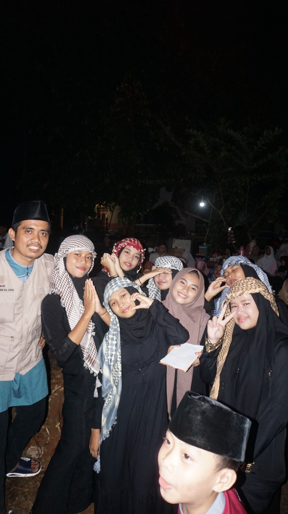
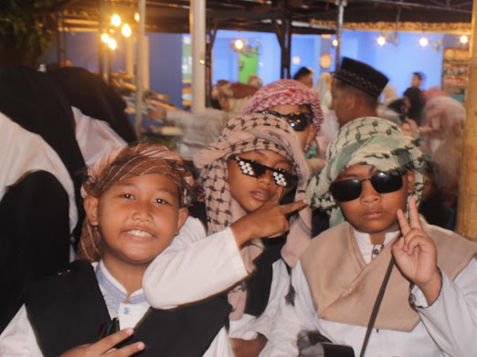
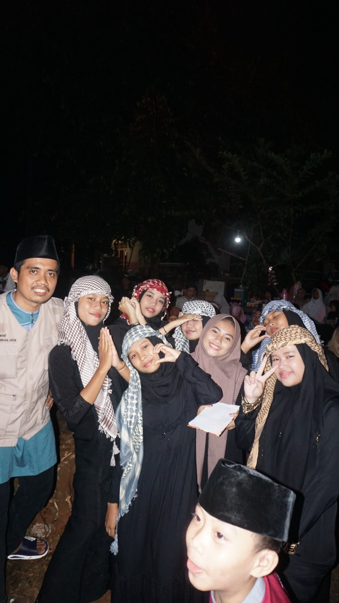
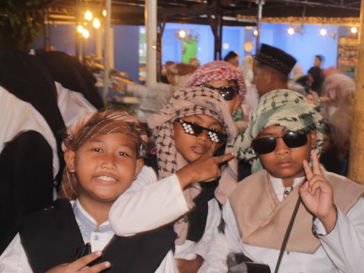
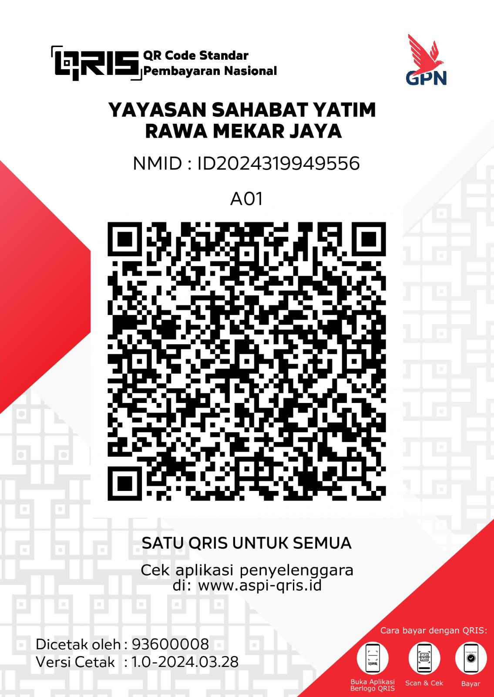

YAYASAN SAHABAT YATIM
RAWA MEKAR JAYA,KOTA TANGERANG SELATAN,BANTEN 15310
TentangYuk kenal kami lebih dalam YAYASAN SAHABAT YATIM. Yayasan Sahabat Yatim adalah sebuah lembaga sosial nirlaba yang berfokus pada pemenuhan hak dan peningkatan kualitas hidup anak-anak yatim, piatu, dan dhuafa di Indonesia. Berangkat dari kepedulian tulus, kami hadir sebagai jembatan kebaikan antara para donatur (Sahabat Kebaikan) dengan mereka yang membutuhkan uluran kasih sayang dan dukungan.
"Menjadi lembaga pengelola ziswaf yang amanah, profesional, dan unggul dalam memuliakan serta memandirikan anak yatim dan dhuafa."
Jika kesulitan mencari silahkan hubungi nomor yang tertera.
Alamat Markas: **Yayasan Sahabat Yatim Rawa Mekar Jaya - SaYaT RMJ - Saung SaYaT,Jl Rw. Mekar Jaya.Kec.Serpong,Kota Tangerang Selatan,Banten 15310**
Pengurus: **+62 899-8226-669**
Hubungi Saya 



Selain uang tunai, kami juga menerima bantuan berupa barang-barang berikut:
Salurkan bantuan terbaik Anda melalui kanal pembayaran resmi Yayasan Sahabat Yatim.
A.N. Yayasan Sahabat Yatim
A.N. Yayasan Sahabat Yatim
Scan barcode di bawah menggunakan GoPay, OVO, Dana, atau M-Banking
A.N. YAYASAN SAHABAT YATIM
Isi form di bawah untuk mengirim pesan atau hubungi saya melalui media sosial.